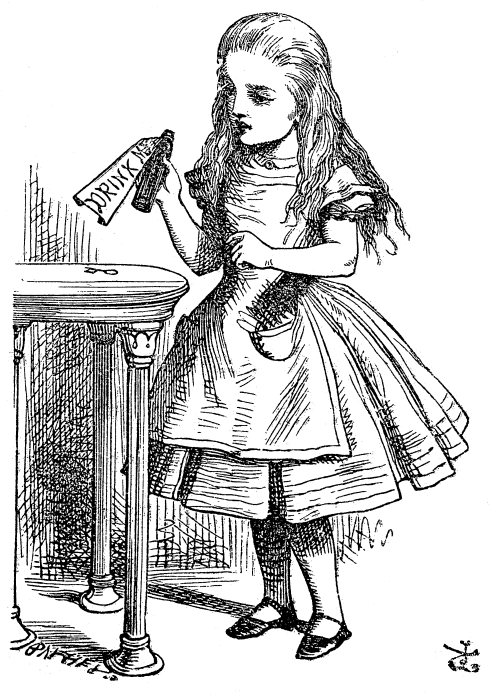
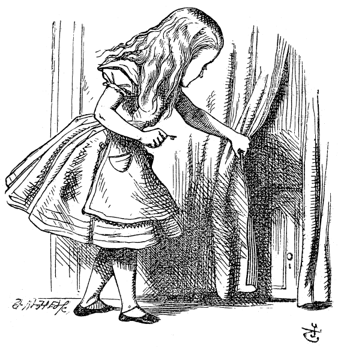

Alice was beginning to get very tired of sitting by her sister on the bank, and of having nothing to do. Once or twice she had peeped into the book her sister was reading, but it had no pictures or conversations in it. "And what is the use of a book," thought Alice, "without pictures or conversations?"
She was considering in her own mind whether the pleasure of making a daisy-chain would be worth the trouble of getting up and picking the daisies, when suddenly a White Rabbit with pink eyes ran close by her.
There was nothing so very remarkable in that; nor did Alice think it so very much out of the way to hear the Rabbit say to itself, "Oh dear! Oh dear! I shall be late!" But when the Rabbit actually took a watch out of its waistcoat-pocket and looked at it, Alice started to her feet and ran across the field after it, just in time to see it pop down a large rabbit-hole under the hedge.
Either the well was very deep, or she fell very slowly, for she had plenty of time to look about her. The sides of the well were filled with cupboards and shelves; here and there she saw maps and pictures hung upon pegs. She took down a jar labelled ORANGE MARMALADE, but it was empty, and she carefully replaced it as she fell past.
"Well!" thought Alice to herself, "after such a fall as this, I shall think nothing of tumbling down stairs!" And still she went down, talking to herself about geography, wondering if she might fall through the earth and come out among the people who walk with their heads downward.
Down, down, down. There was nothing else to do, so Alice soon began talking again. She thought of her cat, Dinah, and wondered if Dinah would miss her. She even began to ask herself sleepily, "Do cats eat bats? Do bats eat cats?"
Just as she was dozing off, thump! thump! down she came upon a heap of sticks and dry leaves. She was not a bit hurt, and the White Rabbit was still in sight, hurrying down another passage.
Alice found herself in a long, low hall lit by a row of lamps. Doors lined the walls, but every one was locked. At last she came upon a little glass table with a tiny golden key on it—and behind a curtain, a small door about fifteen inches high. To her delight, the key fitted.
Through the door she saw the loveliest garden you ever saw. She longed to wander among the bright flowers and fountains, but she could not even get her head through the doorway. "Oh, how I wish I could shut up like a telescope!" she sighed.

Back at the table, she found a little bottle labelled DRINK ME in large letters. Wise little Alice examined it carefully to be sure it wasn’t marked POISON. Finding it harmless, she tasted it—and, finding it delicious, very soon finished it off.
"What a curious feeling!" said Alice. "I must be shutting up like a telescope."
And so it was indeed—she was now only ten inches high, and her face brightened at the thought that she was finally the right size for the little door into that lovely garden. She waited a few minutes, half afraid she might shrink further. "It might end," she thought, "in my going out altogether, like a candle. I wonder what I should be like then?"
After a while, finding that nothing more happened, she decided to go into the garden at once. But, alas! when she reached the door, she had forgotten the little golden key. When she went back to the table for it, she found she could not possibly reach it. She could see it quite plainly through the glass and tried to climb one of the table legs, but it was too slippery. At last the poor little thing sat down and cried.
She generally gave herself very good advice—though she seldom followed it—and sometimes she scolded herself so severely that it brought tears to her eyes. Once, she even tried to box her own ears for cheating herself at croquet, for this curious child was very fond of pretending to be two people. "But it's no use now," thought poor Alice. "Why, there's hardly enough of me left to make one respectable person!"
Soon her eye fell on a little glass box lying under the table. She opened it and found a very small cake marked in currants with the words EAT ME. "Well, I'll eat it," said Alice, "and if it makes me grow larger, I can reach the key; and if it makes me grow smaller, I can creep under the door. Either way I'll get into the garden, and I don't care which happens!"

She ate a little bit and said anxiously to herself, "Which way? Which way?" holding her hand on the top of her head to feel if she were growing. She was quite surprised to find she remained the same size. But Alice had got so used to out-of-the-way things happening that it seemed dull and stupid for life to go on in the common way.
So she set to work and soon finished off the cake.